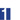
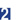
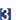

正畸治疗注意事项
 按时就诊，因故不能按时就诊者，应提前与主管医生联系，修改预约时间。凡连续三个月不复诊者，会严重影响治疗效果。
 戴用矫正器的患者要注意口腔卫生，早、中、晚、进食后必须刷牙，否则易造成牙龈炎、牙周炎、龋齿，影响矫正及口腔健康。
 遵医嘱认真戴用矫治器及其附件（如牵引橡皮圈、头帽等），如因多次造成矫治器损坏或遗失者，主治医师有权终止治疗。

矫治器加力后3―5天内，受力的牙齿等组织将有酸胀等不适感，一般一周左右自行消失，如加力后牙齿疼痛明显或疼痛持续加剧，应及时复诊，不得自行扳弄或调整矫治器上的钢丝。以防止牙齿松动、坏死，影响治疗。
严格按医生指导取戴矫治器，在用固定矫治器治疗期间，避免吃较硬、软粘的食物。活动矫治器应保持清洁，进食后除刷牙外还应用牙刷蘸牙膏按矫治器钢丝的各个方向轻轻刷洗矫治器，切忌用热水或其他化学溶液浸泡矫治器。